🗓️ Het opbouwschema na een maagverkleining: van vloeibaar naar vast
Na een maagverkleining bouw je je voeding stap voor stap op. Dat is geen overbodige voorzorg: de verbinding tussen je nieuwe maagzak en je dunne darm heeft tijd nodig om te herstellen. Te snel overstappen op vastere voeding kan leiden tot pijn, misselijkheid of een vastloper bij de verbinding. Het opbouwschema beschermt je herstel terwijl je tegelijk leert hoe je nieuwe maag werkt.
Dat leerproces is misschien wel net zo belangrijk als het fysiologische herstel. Je ontdekt welke smaken je verdraagt, welke texturen prettig zijn en hoe snel je kunt eten. Informatie die je de rest van je leven meeneemt.
De drie fasen in een notendop:
- Fase 1, vloeibaar (week 1-2): alles wat door een rietje past. Gladde soepen, eiwitshakes, bouillon en gezeefde yoghurtdranken. Porties van 100-150ml. Focus op eiwit en vocht.
- Fase 2, gepureerd (week 3-4): zachte purees met de consistentie van appelmoes. Geen herkenbare stukjes, maar meer textuur en voedingsstoffen dan de vloeibare fase. Porties van 100-150g.
- Fase 3, vaste voeding (vanaf week 5-6): zachte, goed gekauwde maaltijden. Dit wordt je nieuwe eetpatroon voor de rest van je leven.
Elke fase heeft zijn eigen eiwit- en vochtdoelen. De recepten op deze pagina zijn geordend per fase, zodat je altijd iets kunt vinden dat bij jouw huidige stadium past. Of je nu in week 1 na je operatie zit of al maanden verder bent, hier vind je recepten die werken.
Eén ding is belangrijk om voorop te stellen: het exacte schema verschilt per ziekenhuis en per type ingreep. Niet elke kliniek werkt met dezelfde tijdslijn. Sommige programma's zijn sneller, andere zijn voorzichtiger. De tijdsindicaties op deze pagina zijn gemiddelden op basis van gangbare Nederlandse protocollen. Jouw behandelteam geeft je een persoonlijk schema. Volg dat altijd boven de algemene richtlijnen op deze pagina.
Wat ik me herinner van mijn eigen opbouwperiode na mijn gastric bypass in januari 2024: de overgangen gingen sneller dan ik verwacht had. Na twee weken vloeibaar was de gepureerde fase een echte mijlpaal. Mijn eerste eetlepel echte puree smaakte beter dan elk fancy restaurant-diner ooit. Die beperking in volume voelt in het begin raar, maar het went. En de resultaten spreken voor zich.
🥣 Vloeibare fase Week 1-2
Alle vloeibare recepten →🥣 Wat eet je in de vloeibare fase?
De vuistregel is simpel: als het niet door een rietje past, mag het er nog niet in. Dat klinkt beperkend, maar er is meer variatie mogelijk dan je misschien denkt. Denk aan gladde soepen volledig geblend zonder stukjes, eiwitrijke shakes, bouillon, gezeefde yoghurtdranken en warme proteïnemelk. Zolang het volledig vloeibaar is en geen textuur heeft, is het in principe goed.
Hoe lang duurt deze fase? Gemiddeld 1 tot 2 weken, maar dit verschilt per kliniek en per patiënt. Sommige ziekenhuizen werken met een iets kortere vloeibare fase, andere houden er langer aan vast. Volg het schema van je eigen behandelteam.
Eiwit-doel vloeibare fase: minimaal 60 gram eiwit per dag, verdeeld over 5 tot 6 kleine momenten. Dat is minder dan 10 gram eiwit per drinkmoment. Een shake van 150ml met kwark en melk haalt dat al. Gebruik de recepten hieronder als basis en wissel af zodat je niet snel op een recept uitgekeken raakt.
Vocht-doel vloeibare fase: 1,5 tot 2 liter per dag. Niet in grote slokken, maar langzaam slurpen. Je maag kan in deze fase maar een kleine hoeveelheid tegelijk aan. Nip kleine beetjes, wacht even, nip weer. Drink nooit tijdens het eten maar wacht minimaal 30 minuten na een maaltijdmoment.
Wat je beter vermijdt: koolzuurhoudende dranken, suikerrijke pakjes of limonade, volle melk in grote hoeveelheden (lactose kan in de eerste weken misselijkheid geven) en vruchtensappen zonder vezels die de bloedsuiker snel laten stijgen.
Signaal dat je naar de volgende fase mag: je haalt je eiwit- en vochtdoel zonder pijn of misselijkheid, je kunt 100-150ml per maaltijdmoment drinken en je behandelteam geeft groen licht. Ga nooit sneller dan je schema voorschrijft, ook als je je goed voelt.
Wat ik me herinner van mijn eigen vloeibare fase: ik maakte elke avond een grote pan soep klaar en vroor die in kleine bakjes in. Dat scheelde enorm veel energie op de moeilijkere momenten. Mijn kippensoep, volledig glad geblend, dronk ik letterlijk elke dag in week 1 en 2. Niet omdat het moest, maar omdat het vertrouwd voelde en mijn maag het goed verdroeg. In de Bari Community hoor ik dat veel mensen zo'n eigen "veilig recept" ontwikkelen in de eerste weken.

Eiwitrijke kippensoep
Glad geblend, dagelijks gedronken door David in week 1 en 2.

Proteïne yoghurtshake
22g eiwit zonder eiwitpoeder. Romig en makkelijk te maken.

Bloemkoolsoep met kwark
Fluweelzacht met eiwitboost van kwark. 14g eiwit per portie.

Warme proteïne chocolademelk
Troostend, zonder suiker, met 16g eiwit. Favoriet op koude avonden.

Groentebouillon met ei
Simpele stracciatella-stijl bouillon. Zacht, verwarmend, eiwitrijk.
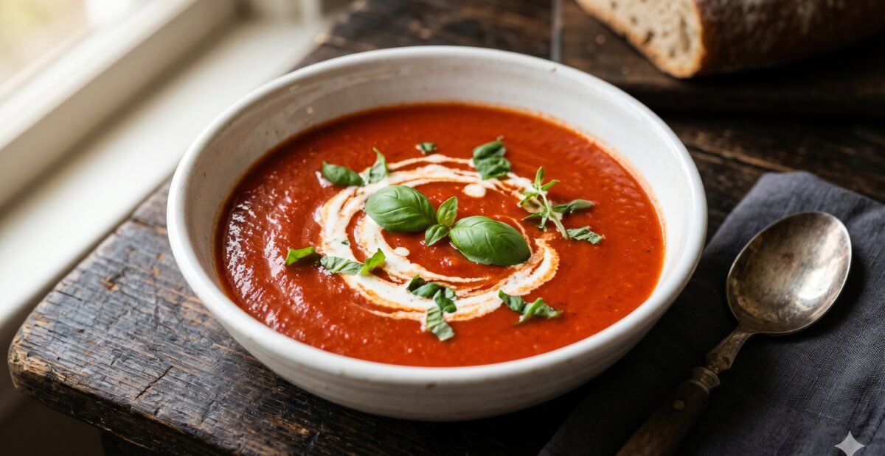
Tomatensoep met roomkaas
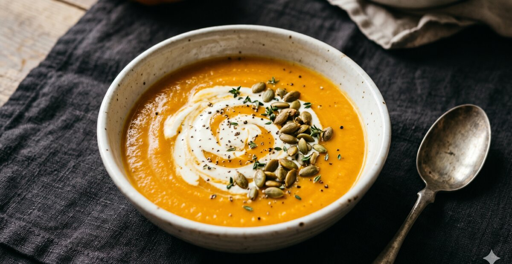
Pompoensoep met gember
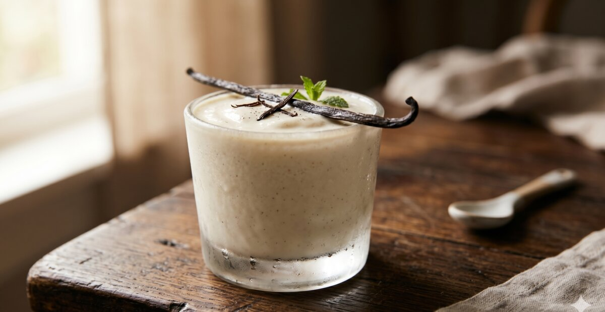
Proteïne vanilleshake
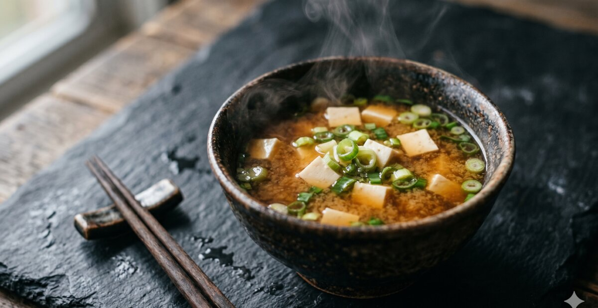
Warme miso met tofu
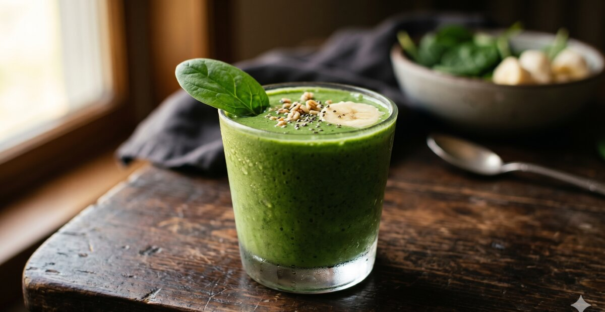
Groene eiwitshake
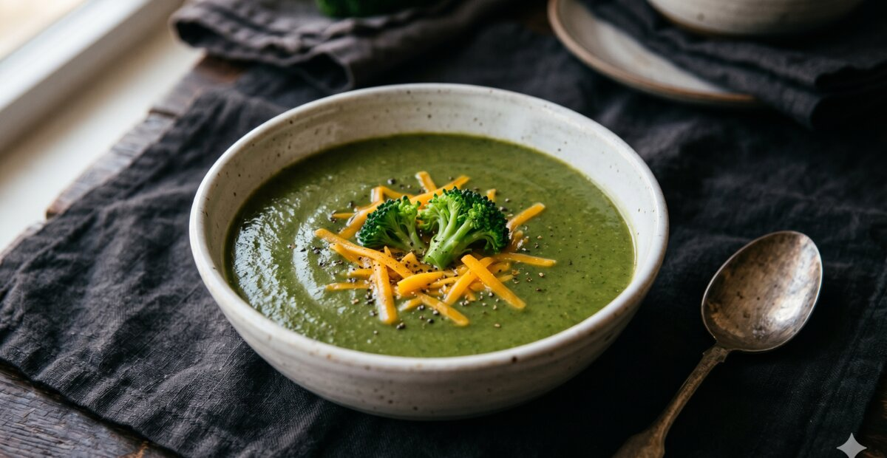
Broccolisoep met cheddar
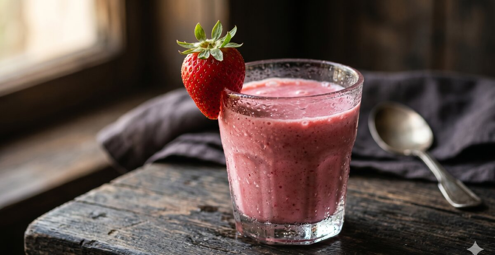
Aardbeien kwarkshake
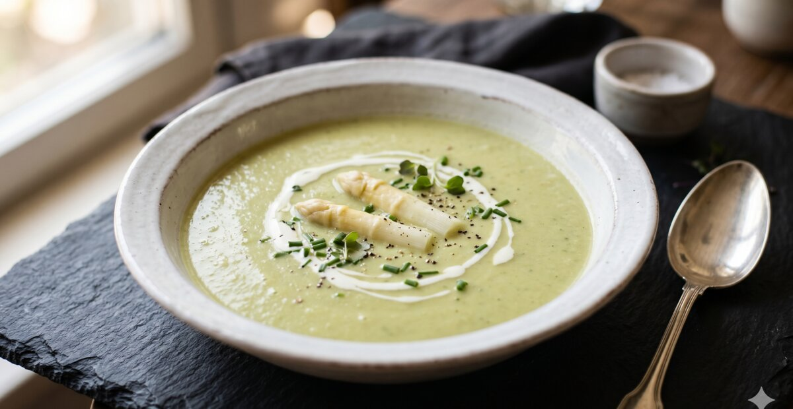
Aspergesoep met kwark
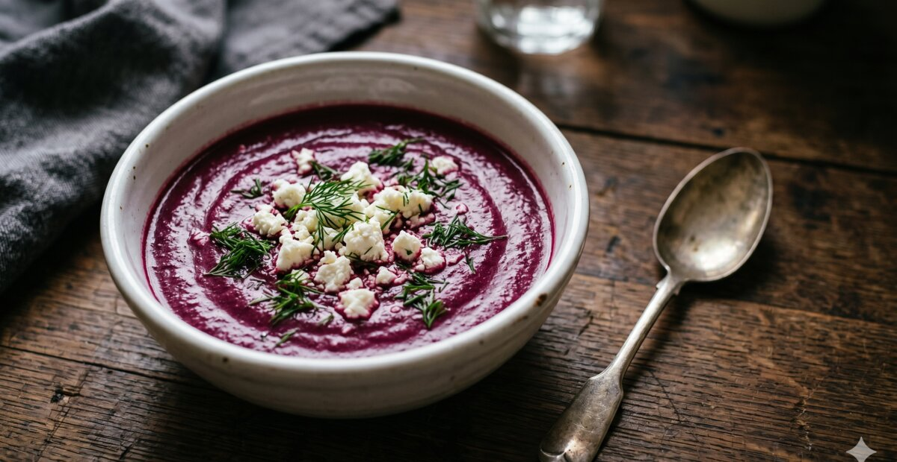
Bietensoep met feta
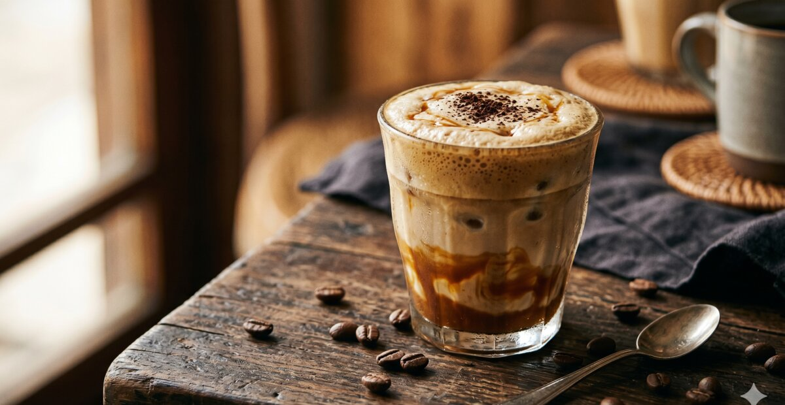
Proteïne koffieshake
🥘 Gepureerde fase Week 3-4
Alle gepureerde recepten →🥘 Wat is gepureerde voeding na een maagverkleining?
De gepureerde fase is de brug tussen vloeibaar en vast. Je voeding heeft nu de structuur van dikke yoghurt of appelmoes: zacht, glad en zonder herkenbare stukjes. Meer substantie dan een shake, maar je maag hoeft er nog niet in te bijten. Het voelt voor veel mensen als een echte mijlpaal, omdat de maaltijden eindelijk weer op eten lijken.
Hoe lang duurt deze fase? Gemiddeld 1 tot 2 weken. Sommige klinieken gaan sneller, andere nemen meer tijd. Een enkele kliniek werkt zelfs zonder aparte gepureerde fase als tussenstap. Volg altijd je eigen protocol.
Eiwit-doel gepureerde fase: 60 tot 80 gram per dag. Het principe "eiwit eerst" geldt hier al volop. Begin elke maaltijd met de eiwitcomponent van je puree, zodat je maag het belangrijkste als eerste verwerkt voordat hij vol raakt.
Welke producten gaan goed gepureerd? Gekookte of gestoomde kip en kalkoen pureren prima als je ze fijn snijdt en blent met een beetje bouillon. Witvis en zalm worden van nature zacht bij bereiding en zijn makkelijk te pureren. Ricotta, hummus en bonen zijn al van nature zacht en hoeven nauwelijks bewerkt te worden. Peulvruchten zijn bovendien een uitstekende plantaardige eiwitbron.
Wat je beter vermijdt: rauw of ongekookt, hard of droog, gepaneerd of gefrituurd, brood of tosti's. Ook rood vlees zoals biefstuk kan in deze fase nog moeilijk liggen voor de maag. Dat komt later.
Signaal voor de overgang naar vaste voeding: je kunt 100-150g per maaltijd verdragen zonder vastloper of misselijkheid, je haalt je eiwitdoel consistent en je behandelteam geeft het groene licht.
Mijn ervaring met de gepureerde fase: ik at bijna elke dag zalmpuree met ricotta. Snel klaar, veel eiwit en ik werd er niet snel op uitgekeken. Kip pureren duurde me te lang in de eerste weken, dus ik koos bewust voor vis en zuivelproducten die weinig bewerking nodig hadden. In de Bari Community hoor ik dat veel mensen zo'n vaste rotatie van twee of drie "veilige" recepten ontwikkelen. Dat is helemaal geen probleem. Afwisseling komt vanzelf als je je zekerder voelt.

Kip-aardappelpuree met courgette
Smaakt als een echte maaltijd. 24g eiwit per portie.

Zalmpuree met ricotta
Vol omega-3, romig en klaar in 15 minuten. 26g eiwit.

Hummus met zachte groente
Plantaardige eiwitten, glad en veelzijdig.

Zoete aardappelpuree met kip
Met kokosmelk en kurkuma. Vol vitamines en 22g eiwit.

Kwark chia pudding
27g eiwit, romig en zoet zonder suiker.

Cottage cheese met fruit
Fris ontbijt met gepureerd fruit. 18g eiwit in 5 minuten.
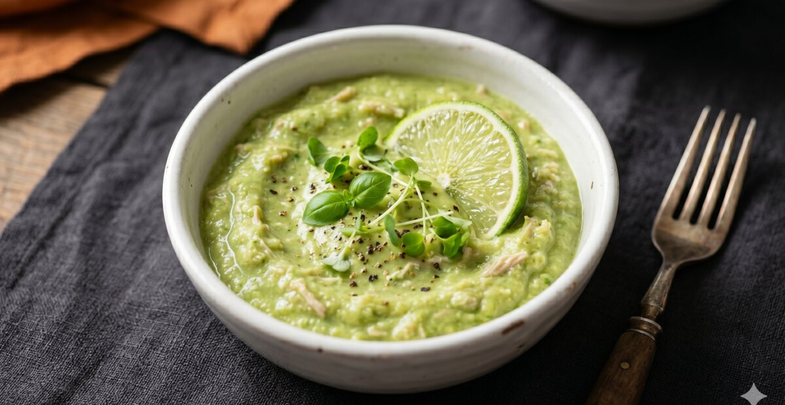
Avocadopuree met kip
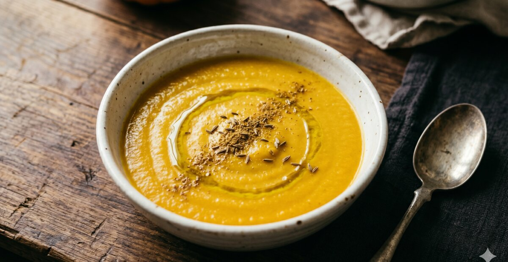
Linzenpuree met kurkuma
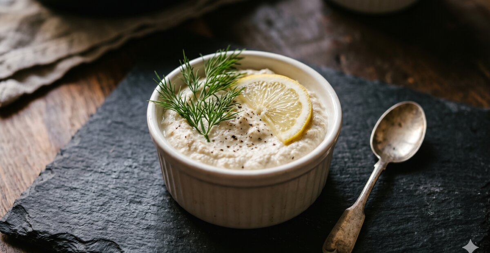
Tonijnpuree met ricotta
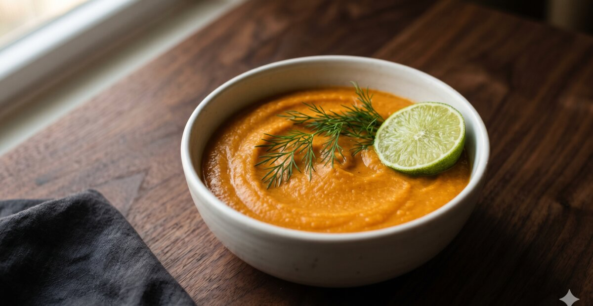
Zoete aardappelpuree met zalm
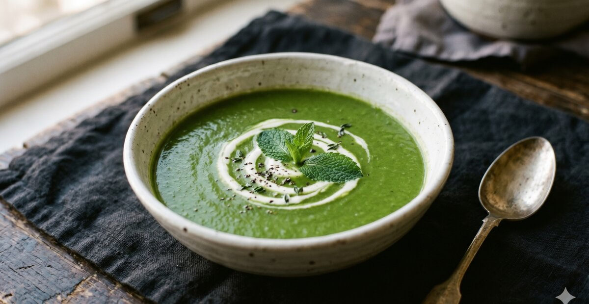
Gepureerde erwtensoep
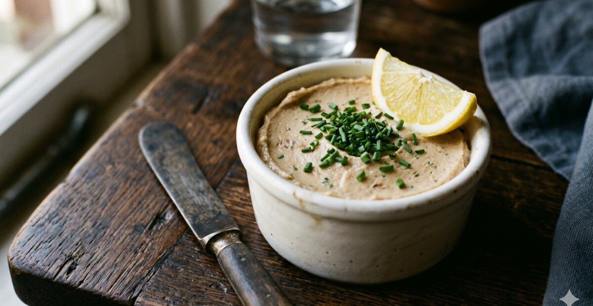
Makreelpuree met crème fraîche

Ei-avocadopuree
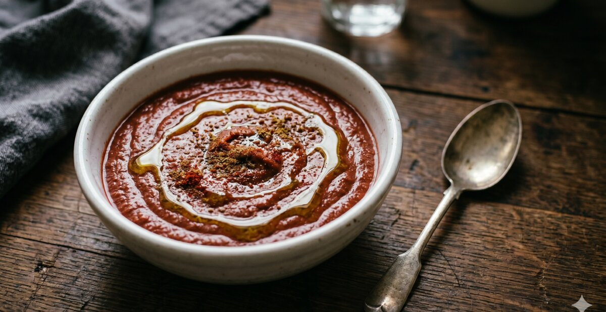
Rode bonenpuree met komijn
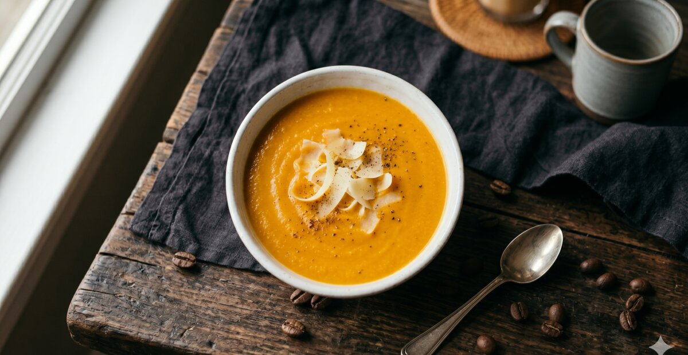
Pompoencrème met parmezaan
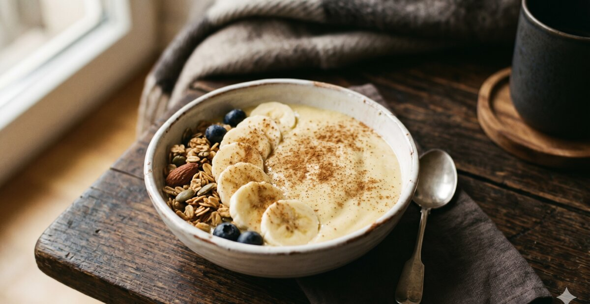
Banaan kwark smoothie bowl
🍽️ Vaste voeding Vanaf week 5-6
Alle vaste voeding recepten →🍽️ Vaste voeding na een maagverkleining: je nieuwe eetpatroon
Vaste voeding klinkt als "normaal eten", maar dat is het maar ten dele. Alles wat zacht, goed kauwbaar en niet te droog is valt in deze categorie. Dat is een breed spectrum: van zachte groenten en gestoofd vlees tot rijst, courgettini en goed bereide vis. Wat er buiten valt: alles wat hard, droog, gepaneerd of gefrituurd is.
Hoe lang duurt deze fase? Levenslang. Dit is geen tijdelijke overgangsfase. De manier waarop je nu eet, wordt je nieuwe eetpatroon. Je portiegrootte blijft kleiner dan gemiddeld, je kauwt bewust en eiwit staat altijd centraal. Dat hoeft niet te voelen als een beperking. Voor de meeste mensen in de Bari Community voelt het na verloop van tijd gewoon als hun normale manier van eten.
Eiwit-doel vaste voeding: 80 tot 100 gram per dag, blijvend. Niet alleen in de eerste maanden, maar ook een jaar, twee jaar of vijf jaar later. Eiwit is nodig voor spierbehoud, herstel en verzadiging. Dat geldt altijd, ook als het gewichtsverlies al lang achter je ligt.
Wat blijft uitdagend: rood vlees zoals biefstuk kan droog en taai zijn en is voor veel mensen moeilijk te verdragen. Droog brood geeft bij veel mensen een vastloper. Gepaneerd of gefrituurd is door de structuur al lastiger te verteren. Koolzuur en alcohol zijn voor veel mensen ook lang na de operatie een aandachtspunt.
Mijn vaste shortlist na ruim een jaar: ontbijt is bij mij bijna altijd Griekse kwark met noten en wat fruit. Lunch wisselt, maar vaak een wrap met kip of cottage cheese met gerookte zalm. Avondeten draait om vis of kip met zachte groenten. Als snack pak ik no-bake eiwitrepen of een handje noten. Simpel, weinig voorbereiding en altijd voldoende eiwit.
Tips om gevarieerd te blijven eten: wissel elke week minstens één recept af. Probeer eens een nieuwe kruidenmix op je kip, of vervang rijst door courgettini. Kleine variaties houden het leuk zonder dat je uit je veilige zone hoeft te stappen.
Wat ik nu, ruim twee jaar later, anders doe: ik eet bewuster maar denk er minder over na. In het begin telde ik alles. Nu voel ik het. Dat niveau van intuïtief eten bereik je niet in een maand, maar het komt vanzelf als je lang genoeg op schema eet en jezelf de ruimte geeft om te leren.

Proteïne pannenkoeken
28g eiwit per portie. David's favoriete weekendontbijt.

Kipgehaktballetjes in tomatensaus
32g eiwit, mals en zacht. Community favoriet in de Bari Community.

Griekse kwark bowl
25g eiwit, klaar in 3 minuten. David's dagelijkse ontbijt.

Courgettini met avocadopesto
34g eiwit, glutenvrij pasta-alternatief. Fris en licht.

Eiwitrijke kippensoep (fase 3)
28g eiwit per kom. Dikkere versie met stukjes kip en groente.

Gevulde paprika met tonijn
30g eiwit, koud te eten. Klaar in 10 minuten , geen koken.

Zalm met spinazie en ricotta
38g eiwit, vol omega-3. Klaar in 20 minuten.

High-protein overnight oats
24g eiwit, avond ervoor maken. Perfecte ochtend.

Kip tikka masala
36g eiwit, mild gekruid. De kip wordt zo mals door de yoghurtmarinade.

Eiwitrijke brownie met kidneybonen
8g eiwit per stuk, suikervrij. Community favoriet , niemand proeft de bonen.

Chocolade havermout met peer en pindakaas
Warm ontbijt met 28g eiwit. Community recept van Simone.

Kipsalade met avocado en ei

Zalm met zoete aardappel en spinazie

Kwark cheesecake zonder suiker

Wrap met kip en hummus

Griekse kip met feta en courgette

Eiwitrijk bananenbrood

Garnalen met courgettilint en pesto

Kipstoofpotje met wortels

Cottage cheese met gerookte zalm

No-bake eiwitrepen
🚨 Wat als je in een fase vastloopt?
Niet iedereen doorloopt het opbouwschema zonder problemen. Sommige mensen merken dat ze een bepaald recept of een bepaalde textuur niet verdragen, ook als ze precies doen wat hun schema zegt. Dat is geen falen. Het is informatie.
Symptomen om serieus te nemen: pijn na het eten, structureel misselijk zijn na maaltijden, braken vaker dan incidenteel, het niet halen van je eiwit- of vochtdoel meerdere dagen achter elkaar, of het gevoel dat niets meer "landt".
Stap 1: ga tijdelijk terug naar de vorige fase. Eén tot drie dagen vloeibaar of gepureerd kan de maag rust geven. Voor de meeste mensen lossen de klachten daarmee op. Dwing jezelf niet verder dan je lichaam aangeeft.
Stap 2: bel je behandelteam. Als terugschakelen niet helpt, of als de klachten aanhouden, is je behandelteam de juiste plek om te beginnen. Zij kennen jouw situatie en kunnen beoordelen of aanpassing van je schema nodig is.
Wanneer is het urgent? Bloedig braken, koorts boven de 38,5 graden, hevige buikpijn die niet weggaat, of het volledig niet kunnen drinken zijn alarmsignalen. Ga dan naar de spoedeisende hulp of bel je chirurg direct. Wacht daar niet mee.
Dit is geen medisch advies. Raadpleeg altijd je eigen behandelteam bij twijfel of aanhoudende klachten.
🥩 Hoeveel eiwit per dag heb je nodig?
Een van de meest gestelde vragen na een maagverkleining is hoeveel eiwit je per dag nodig hebt. De gangbare richtlijn is 0,8 tot 1,2 gram eiwit per kilogram lichaamsgewicht. Wat dat in de praktijk betekent, verschilt per fase.
| Fase | Week | Eiwitdoel | Richtlijn |
|---|---|---|---|
| Vloeibaar | 1-2 | Minimaal 60g | Verdeel over 6 kleine momenten |
| Gepureerd | 3-4 | 60-80g | Eiwit altijd als eerste, dan pas rest |
| Vaste voeding | Vanaf week 5 | 80-100g | Elke maaltijd 20-30g eiwit nastreven |
| Lange termijn | Levenslang | 60-100g | Blijvend nodig, ook jaren later |
Wat ik zelf merk na mijn gastric bypass in januari 2024: als ik minder dan 70 gram eiwit haal op een dag, voel ik me trager en heb ik meer eetdrang in de avond. Dat is natuurlijk mijn eigen ervaring. In de Bari Community hoor ik vaak vergelijkbare dingen. Maar elk lichaam reageert anders, dus gebruik de tabel als vertrekpunt en stem het af met je diëtist.
Eiwitpoeder kan in de eerste weken helpen als je het doel niet haalt met gewoon eten. Na een paar maanden lukt het bij de meeste mensen steeds beter om het via voeding te bereiken.
🔧 Hulpmiddelen die je echt nodig hebt
Je hoeft je keuken niet om te bouwen na een maagverkleining. Maar een paar dingen maken echt een verschil. Dit zijn de hulpmiddelen die ik zelf dagelijks gebruik en die ik ook vaak terugzie bij anderen in de community:
💡 Mijn drie principes voor recepten na maagverkleining
Na meer dan een jaar leven met een gastric bypass heb ik mijn aanpak teruggebracht tot drie basisprincipes. Geen ingewikkeld systeem, maar drie dingen die ik bij elk recept en elke maaltijd toepas.
1. Eiwit eerst
Begin elke maaltijd altijd met de eiwitcomponent. Kip voor de groente. Kwark voor het fruit. Vis voor de saus. Je maag is klein en vult snel, dus zorg dat het belangrijkste er als eerste in gaat.
2. Kleine portie, goede kwaliteit
Na een maagverkleining eet je minder volume, maar dat betekent niet dat je minder smaak wilt. Investeer liever in goede ingrediënten dan in grote hoeveelheden. Een klein, goed bereid gerecht geeft meer voldoening dan een grote smakeloze portie.
3. Geen verboden voedsel
Ik geloof niet in een verboden-lijst na een maagverkleining. Wat ik wel doe: bewuste keuzes maken. Een stukje chocolade is geen probleem. Een eiwitrijke brownies van kidneybonen geeft wel meer voldoening én meer voedingsstoffen. Het gaat om wat je het vaakst eet, niet om uitzonderingen.
❓ Veelgestelde vragen over recepten na maagverkleining
Eieren zijn een uitstekende eiwitbron, maar de vloeibare fase vraagt om een specifieke bereiding. Gepocheerde eieren of een zacht roerei kunnen goed werken, maar gestoofd in bouillon of verwerkt in een gladde soep is doorgaans makkelijker voor de maag. In de Bari Community hoor ik dat de meeste mensen eieren goed kunnen verdragen in de vloeibare fase, maar het is altijd verstandig om dit eerst te bespreken met je diëtist.
De exacte duur verschilt per ziekenhuis en per patiënt. In de meeste Nederlandse programma's is de vloeibare fase week 1-2, de gepureerde fase week 3-4, en de zachte vaste voeding fase week 5-6. Daarna volgt stap voor stap terug naar normale voeding. Volg altijd het schema van jouw bariatrisch team, want zij kennen jouw situatie het beste.
Dat is heel normaal. Wat voor David werkt of wat anderen in de Bari Community goed verdragen, hoeft niet voor jou te gelden. Als een recept ongemak geeft, stop dan en wacht een week voor je het opnieuw probeert. Houd eventueel een voedingsdagboek bij om patronen te ontdekken. En twijfel je over een specifiek ingrediënt? Vraag het aan je diëtist.
Ja, kruiden zijn over het algemeen goed te verdragen en maken je eten een stuk smakelijker. Basilicum, peterselie, tijm, kurkuma, en knoflookpoeder werken goed. Wees voorzichtig met sterke specerijen zoals cayennepeper of kerrie in de eerste weken, omdat ze de maag kunnen irriteren. Bouw rustig op en kijk hoe jij reageert.
De vloeibare fase betekent voeding die door een rietje past: soepen die volledig glad zijn geblend, shakes en bouillon. Geen stukjes, geen textuur. In de gepureerde fase mag je zachte, gemixte voeding eten met de consistentie van appelmoes. Nog steeds geen stukjes, maar wel meer structuur en meer smaak. De overgang gaat voor de meeste mensen geleidelijk en voorzichtig.
🥝 Vragen over recepten?
Stel je vraag in de Bari Community WhatsApp community. David en andere ervaringsdeskundigen helpen je verder.
Doe mee met Bari Community →